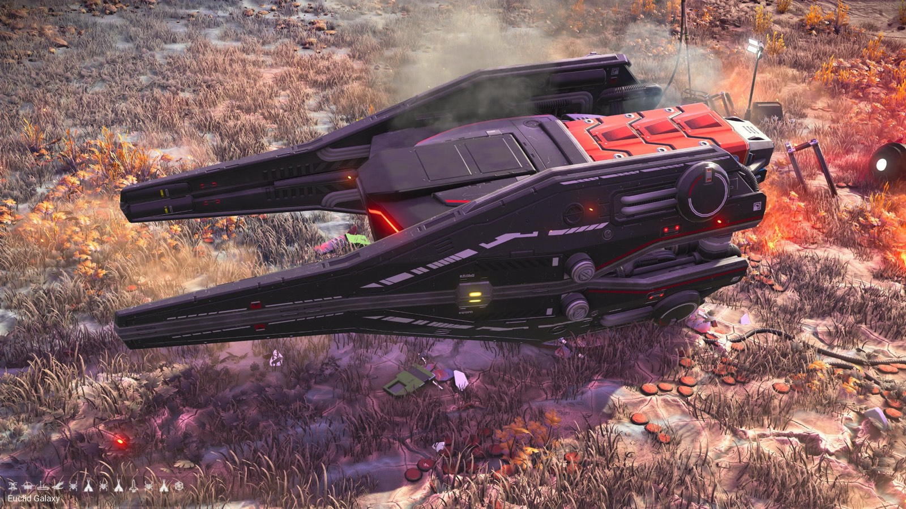
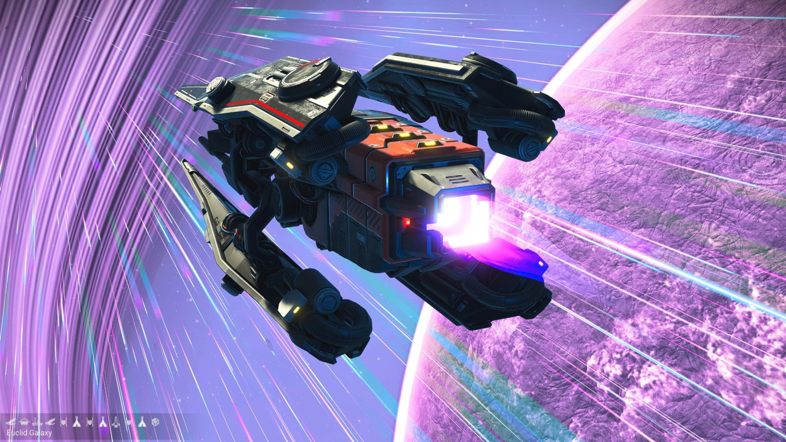
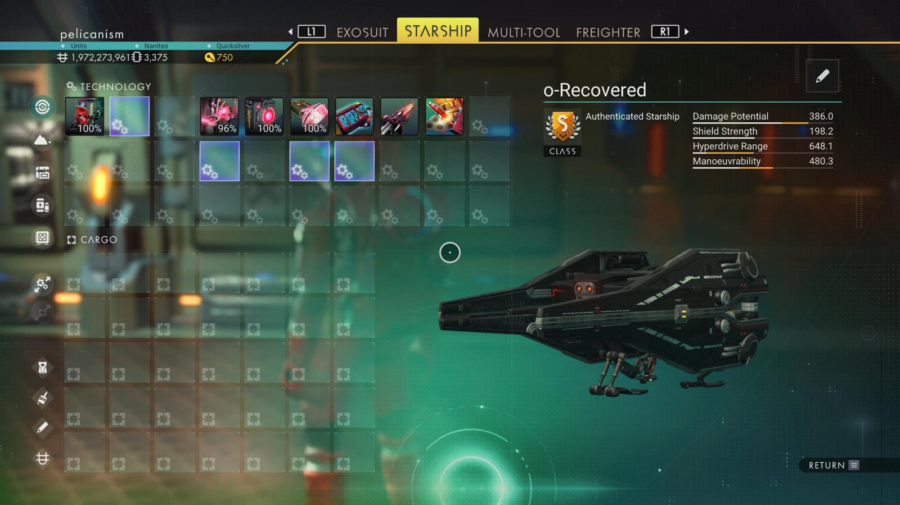

Waypoint 13
Daobeih-Renn XVIII



- Portal glyphs
- 20617C7CD7CA
- Face · Sunset · Boat · Bird · Bug · Tent · Bug · Tent · Rocket · Bug · Tent · Voxel
- Distance from core
- 1,129,791 LY
- Jump from previous
- 1,903 LY
- Planet coordinates
- -36.21, +74.75
- Ship as found
- C-class, 35+24 slots
- S-class ship
- ο-Recovered
- Damage
- 386.0
- Shield
- 198.2
- Hyperdrive
- 648.1
- Manoeuvrability
- 480.3